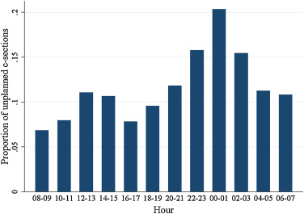

Obstetric studies that address the treatment paradox#
Executive summary
This page summaries examples of studies in obstetrics that have attempted to account for the treatment paradox
Costa-Ramón et al. 2018#
Study: It’s about time: Cesarean sections and neonatal health. [Costa-Ramón et al. 2018]
Aim: Estimate causal relationship between caesarean section and newborn health:
Apgar-1 and Apgar-5
Reanimation (assisted ventilation)
ICU admission
Neonatal death
Umbilical cord pH
Reason for causal inference: Comparing women who had C-section to those who had vaginal birth…
Suffers from omitted variable bias - they differe in characteristics that influence outcome - and analysis found observable characteristics that can relate to newborn health differed significantly (age, gestational length, obstetric risk, education achievement)
‘Does not allow to identify which kind of c-section is causing whatever health effects are found, since we observe the outcomes of both medically and non-medically indicated interventions’
Method:
Instrumental variable approach - use time of birth as instrument for mode of delivery
Time of birth is associated by whether receive the treatment - unplanned C-sections more likely in early hours of the night
Time of day unrelated to outcome and to other confounders - mothers giving birth at different times of day are observationally similar - suggesting excess number of C-sections observed are due to non-medical reasons
OLS regression with outcome of neonatal health, and predictors of:
Mother’s personal and pregnancy characteristics
Estimate from a regression with outcome of whether delivery was unplanned C-section or vaginal delivery and predictors of:
Whether woman gave before from 11pm-4am or not (which is when obstetricians are more likely to, to get time for rest or leisure)

My DAG:
Costa-Ramón et al. 2022#
finish notes on this study
Study: The Long-Run Effects of Cesarean Sections. [Costa-Ramón et al. 2022]
Aim: Estimate causal relationship between potentially avoidable caesarean sections and health outcomes:
Neonatal - ‘Apgar scores one minute after birth, admission to intensive care unit (ICU), need of assisted ventilation, and early neonatal mortality (defined as neonatal death in the first week of life)’
Longer-term - ‘asthma, atopic diseases (atopic dermatitis and allergic rhinitis), type 1 diabetes, and obesity’
Methods:
(1) Instrumental variable approach
Use combination of (1) type of day - working or pre-leisure day, and (2) work shift - normal or not - as found that unplanned C-section more likely during the normal working shift on pre-leisure days compared to regular working days
Use 2SLS estimator to identify a local average treatment effect (LATE)
(2) Difference-in-differences
For sample of sibling pairs, where older sibling was born by vaginal delivery, then ‘compare the health gap between siblings in families where the second child was born by an unplanned C-section with families where the second child was born by vaginal delivery’
This controls for ‘time-invariant unobserved heterogeneity at the family level and the effect of birth order’
’Our empirical strategy builds on numerous studies that have used siblings fixed effects to estimate the impact of health shocks while in utero or after birth (for example, Oreopoulos et al. 2008; Almond, Edlund, and Palme 2009; Almqvist et al. 2012; Aizer, Stroud, and Buka 2016) ‘
Halla et al. 2016#
Study: Cutting fertility? The effect of cesarean deliveries on subsequent fertility and maternal labor supply. [Halla et al. 2016]
Aim: Identify effect of caesarean delivery on subsequent fertlity and maternal labour supply
Method:
Instrumental variable approach - uses day of week as instrumental variable
Obstetricians less likely to do caesarean deliveries on weekends and public holidays, and are incentivised to do them on Fridays and days before public holidays
‘Women giving birth on different days of the week are pre-treatment observationally identical’
My DAG:
Jachetta 2015#
Cannot find paper, so notes are from Costa-Ramón et al. 2018’s description of the study
Study: Cesarean Sections and Later Health Outcomes. Jachetta 2015.
Aim: Estimate causal relationship between caesarean section and hospitalisation (total or resulting in asthma)
Method:
Instrumental variable approach - use ‘variation in medical malpractice premia at the Metropolitan Statistical Area (MSA) level in the US as an instrument for the rate of risk-adjusted cesarean sections’ - though note some threats to the validity of the instrument
Thangaratinam et al. 2017#
Study: Development and validation of Prediction models for Risks of complications in Early-onset Pre-eclampsia.[Thangaratinam et al. 2017]
Aim: Predict adverse maternal outcomes outcomes in patients with early-onset pre-eclampsia
Methods:
Survival model ‘censored at 34 completed weeks’ gestation to predict the risk over time at daily intervals from diagnosis of early onset pre-eclampsia’
Logistic regression model ‘to predict the overall risk of maternal complications by postnatal discharge’
Account for treatment paradox by including treatment as predictor: baseline treatment with hypertensives and magnesium sulfate as predictors in both models [Thangaratinam et al. 2017]
In a 2016 commentary in the British Journal of Obstetrics and Gynaecology (BJOG)[Cheong-See et al. 2016], they examined this model to identify what made it succesful and highlighted:
Large sample size
Standardisation of treatment or intervention
Consideration of the initiation of treatment being an outcome itself - i.e. “when starting a treatment is likely to prevent an adverse outcome, those who received the treatment could also be considered to have experienced the outcome”[Murphy et al. 2019]
Helenius et al. 2019#
don’t quite understand
Study using data from the National Neonatal Research Database (NRRD) investigating whether birth in a non-tertiary hospital or transfer within 48 hours are associated with poor outcomes when compared with birth in a tertiary setting. A “tertiary” setting is one that provides specialist care. Their hypothesis was that mortality and severe brain injury would be higher in transferred infants compared with non-transferred infants born in tertiary hospitals.
They use propensity score matching to create matched groups for comparison with near identical distributions of background and potential confounder variables.
Paper: https://doi.org/10.1136/bmj.l5678
Supplementary: https://www.bmj.com/content/bmj/suppl/2019/10/16/bmj.l5678.DC1/helk050424.ww1.pdf
Responses: https://www.bmj.com/content/367/bmj.l5678/rapid-responses
Examples to look at#
https://doi.org/10.1111/cdoe.12634 - Caesarean delivery and early childhood caries: Estimation with marginal structural models in Brazilian pre-schoolers - Ladeira et al. 2021
https://bmjopen.bmj.com/content/bmjopen/10/11/e038845.full.pdf - Protocol for development and validation of a clinical prediction model for adverse pregnancy outcomes in women with gestational diabetes - Cooray et al. 2020
Addressing the treatment paradox (in this case with insulin) is a challenge in prediction modelling studies. The traditional approach has been to accept predictions in the context of current care. However, this does not remove the possibility that a potentially useful model may appear to perform poorly due to the confounding effect of the judicious application of effective interventions to individual’s whom clinicians subjectively assess to be at high risk of the outcome of interest.
Two solutions to address the problem of treatment paradox in prediction modelling studies have been advocated.50
First, the use of treatments suspected to confound the predictor-outcome relationship can be set as a predictor in the final model.
Second, the use of such effective treatments can be included within a composite outcome to be predicted.
For this study, both approaches were considered but deemed inappropriate. For the former, the inclusion of the requirement for insulin therapy as a predictor is not possible as this information is not available at the intended moment of prediction—the time of GDM diagnosis, usually around 24 to 28 weeks gestation. For the later, inclusion of the requirement for insulin therapy within the composite outcome would impair its interpretability as this outcome occurs at a significantly higher frequency than the other component outcomes (31% vs approximately 10% based on our prior work).44 This is likely to lead to a less meaningful composite that is primarily driven by the need for insulin therapy and no longer predicts what we want (adverse pregnancy outcomes). While many promising novel approaches have been proposed in the statistical literature, such as multistate modelling or marginal structural models for ‘treatment drop-ins’,51 52 at time of writing all are primarily based on empirical data and are yet to be applied to clinical prediction problems.
The three possible results from the sensitivity analysis to evaluate the effect of including the decision to treat with insulin will be informative and may be interpreted as follows. If the sensitivity analyses find that the inclusion of the decision to treat with insulin within the outcome:
Positively affects model performance, then this suggests the presence of treatment paradox, that is, pregnancy complications are more likely to occur in the absence of insulin therapy;
Has no significant effect on model performance then this suggests that the model is robust with predictive performance not affected by the decision to treat, that is, the absolute risk of adverse pregnancy outcomes for an individual woman with GDM is not affected by insulin therapy;
Negatively affects model performance, then this would suggest that adverse pregnancy outcomes are more likely to occur in women treated with insulin, and thus imply more ‘severe’ GDM or a harmful effect for this treatment. (unlikely)
The effect of treatment with insulin will be further evaluated using an IPTW algorithm to weight women according to their propensity of having been treated and transformation of the logistic model into a multinomial model. This multinomial model will have four categories depending on the occurrence of the composite pregnancy outcome and whether the women have received treatment with insulin or not.
https://doi.org/10.1093%2Finthealth%2Fihz111 - Adverse infant outcomes associated with caesarean section delivery in India - Gondwe et al. 2020
https://doi.org/10.1093%2Fpch%2Fpxz051 - Caesarean section and neonatal survival and neurodevelopmental impairments in preterm singleton neonates - Lodha et al. 2020
https://doi.org/10.1111/aogs.13214 - Propensity score method for analyzing the effect of labor induction in prolonged pregnancy - Pyykönen et al. 2017
https://doi.org/10.1016/j.ejogrb.2015.09.011 - Elective repeat cesarean delivery compared with trial of labor after a prior cesarean delivery: a propensity score analysis - Kok et al. 2015
https://jamanetwork.com/journals/jamapediatrics/fullarticle/2792041 - Developmental Outcomes for Children After Elective Birth at 39 Weeks’ Gestation - Lindquist et al. 2022
https://doi.org/10.1186%2Fs12887-018-1324-3 - Mode of delivery and short-term infant health outcomes: a prospective cohort study in a peri-urban Indian population - Gondwe et al. 2018
https://www.ncbi.nlm.nih.gov/pmc/articles/PMC7755743/ - Mode of delivery, type of labor, and measures of adiposity from childhood to teenage: Project Viva - Mueller et al. 2021
https://doi.org/10.1111/cdoe.12634 - Caesarean delivery and early childhood caries: Estimation with marginal structural models in Brazilian pre-schoolers
Other#
Incorporation of treatment in the model: ‘In the prediction of metabolic acidosis in neonates (example 1) there could be an intervention effect present owing to cesarean delivery. An unexpected finding was observed for the relation between intrapartum fever and metabolic acidosis (OR 0.86 [95% CI 0.68–1.08]). Upon inclusion of cesarean delivery in the model, intrapartum fever was positively related to metabolic acidosis (OR 1.08 [95% CI 0.86–1.34]), which was in line with expectations.’[Schuit et al. 2013]
Including an alternative outcome not impacted by treatment paradox: By including abnormal CTG as a neonatal outcome (alongside stillbirth, early neonatal death, mean birthweight, incidence of small-for-gestational age, neonatal unit admission, and composite of Apgar5<7, pH<7 or neonatal encephalopathy).[Bhatia et al. 2019]